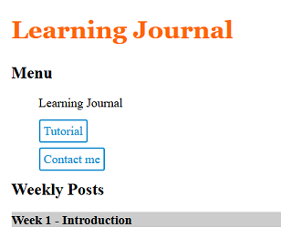

This week's tutorial continued my introduction to basic HTML, and I began
creating the basic format of my index page.
The tutorial showed me how to:
Add a datetime to posts
Create lists
Create navigations in the webpage
Add images to the blog
Send emails from a hyperlink
Week 3 - Document structure and hypertext
This week I used tables to create a timetable for my contact page.
The tutorial showed me how to:
Use nested and glossary lists
Create a table for my calendar
Quote text for use in citations
Turn an image into a link
Week 4 - Cascading style sheets
This lab introduced me to the basics of css, which can be used to add a more complex design to a webpage.
I also found out how to create a proper navigation bar at the top of the screen, by styling links
to show which page is active and that change colour when you hover.
The tutorial showed me how to:
Use normalize.css to update my webpage to meet modern standards
Create a stylesheet to begin adding css to my webpage
Style elements such as the body and headers

Week 5 - CSS box model and measurement
This week I learnt about different ways to manipulate and style text to create a more engaging website.
I also made my own Return-to-top button using the design for the navigation bar, by placing an anchor
at the top of the screen and a sticky tag to keep the button on the bottom-right
The tutorial showed me how to:
Change fonts, and specify fallback fonts incase it is unsupported
Style paragraphs, with properties such as margins and text-alignment
Move an image around the webpage and change the way it interacts with text
Week 6 - Responsive web design
This week I learnt about responsive web design, i.e. dynamically modifying the webpage
based on factors such as the size of the viewport.
Modifying the size and design of elements as the viewport shrinks is necessary to ensure
mobile users can still read text and pictures, and interact with things such as buttons.
Making a responsive website takes more time and effort, but is nescessary as mobile devices
are now used by the majority of users.
I also looked up how to make the page slide rather than flick when using the navigation
and return-to-top button, which feels much nicer to use.
The tutorial showed me how to:
Use media queries to modify elements based on factors such as viewport size
Style elements to accomodate smaller screens
Make flexible images that aren't too large or small for different devices
Use different resources to test responsive elements easily
Week 7 - Flexible media
This week covered flexible media: using different methods to create responsive
and better-looking image and video containers
I also learnt how to use software such as Photoshop to optimise images. Optimising images
is important as they are a large contributing factor to long load times.
Long load times can lower user-retention, as it can lead to a frustrating experience
I checked load-time by using the PageSpeed Test firefox extension, which showed a 1.5ms
increase in load-time after I'd optimised all the images, with the main issue being the background-image
as it is repeated on every page.
I also found that the video has the largest effect on load-time, but the fix for this involves some JavaScript code,
which I've decided to leave until Semester 2 to fix.
The tutorial showed me how to:
Clip large images
Create flexible image and video containers
Generate colour palettes
Create background images, either full-sized or repeated
Use CSS3 rather than digital images
Week 8 - Responsive layout
This week I tested different methods of formatting my tutorial page, trying to make the most
appropriate and engaging design for the content.
I decided to make my tutorial based around something simple, baking a cake, as it can easily include
text, videos, and pictures.
After trying both flexbox and multi-column designs I decided that flexbox was the most appropriate
for organising the images.
I then placed a video above the flexboxes and added in some headings
After testing the page's load speed with GTMetrix I found that the images were scaled, which increased the load time massively.
I fixed this by resizing all the images with Photoshop, so that they don't need to be scaled, and the load time lowered.
The tutorial showed me how to:
Create flexboxes to organise cards in both columns and rows
Make the flexboxes responsive, so that the content all fits on the screen
Use a multi-column layout
Week 9 - HTML and CSS forms
This week I learnt how to create forms using a mixture of HTML and CSS
The form was placed onto my contact page to enable users to send me messages, which would probably be expanded
after learning how to take the data from the form using JavaScript
I remade my timetable by using an online tool that turns it into different div elements rather than table elements,
which allows easier customisation, and then redesigned it using CSS
I then floated the timetable alongside the form and made them both responsive
It took quite a bit of time to make everything responsive; I had to make the timetable move and everything resize,
the text in the timetable grow, and stop the contact form outlines from leaving its borders. This is difficult
as text-boxes have an enforced minimum-size
While the text-size adjusts based on viewport size, which was done using viewport-width(vw) units
rather than px or em, it is hard to read on smaller viewports.
The tutorial showed me how to:
Create a form using different elements, such as fieldsets, labels, and text boxes
Style a form using CSS
Enhance a form using different input types
Validate data in input boxes by specifying the input content
Reflection and ideas
I feel that I've accomplished the objectives by using both the tutorials and independent research
to create an organised and responsive 3-page website.
The skills I've learnt could definitely be useful in the future, as web-development is a very
popular and active career path, with global opportunities
The website passed all tests I used, including W3C's HTML and CSS validation, and had high GTmetrix(100), YellowLab(92) and PageSpeed(100) scores(although contact.html
had low scores caused by the youtube video).
There is definitely a lot of things I can still do to improve the website, which I imagine
will begin in Semester 2 when we start learning JavaScript and can create a more interactive design
However there is still a lot that I could improve without JavaScript, for example:
I feel that the website has too much whitespace and doesn't fill enough of the screen,
changing this would take a while but would improve appearance on mobile and the overall aesthetic.
My images have varying file formats, a low-priority change would be to make them all .png or .jpg
The navigation bar at the top collapses if the viewport is too small, which I'd like to replace
with a collapsible hamburger menu, however that's difficult to do without JavaScript
The blog doesn't contain enough pictures and I feel that the main page need more colour,
however I've had lots of trouble trying to find a good design
The timetable has responsive text-size, however it gets too small to read on very small viewports,
I'd like to work out an algorithim for the text size (using vw) that creates text visible on all viewports.
I'd like to create a better design for the navigation on the learning journal, which would be
my next and most achievable improvement, however I ran short on time.
I've seen examples of the return-to-top bar changing transparency as you scroll down,
which I'd definitely like to experiment with
Finally I'd like to learn how to use animations to create clean transitions between the pages,
as I feel the loading and white-flash when you change pages is clunky.